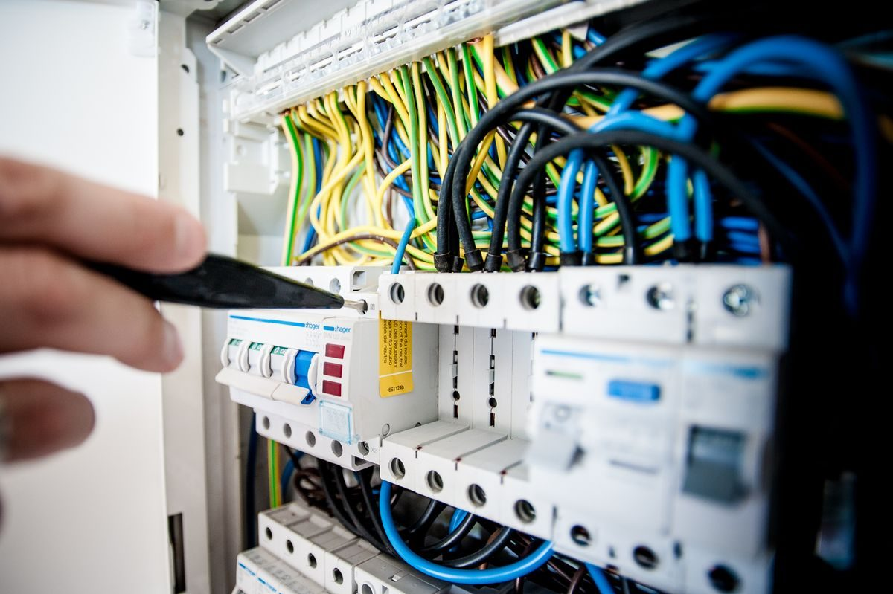
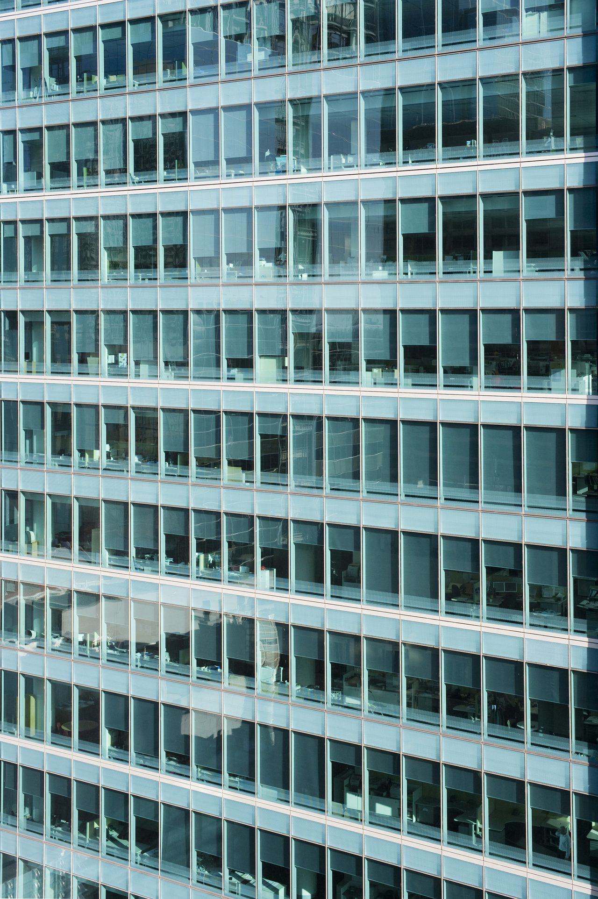
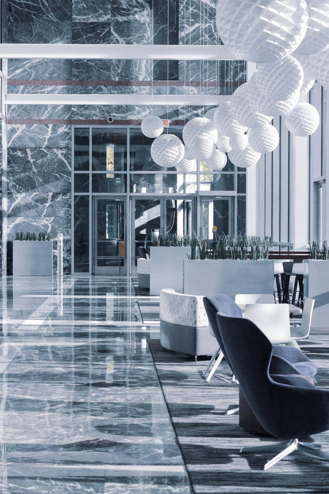
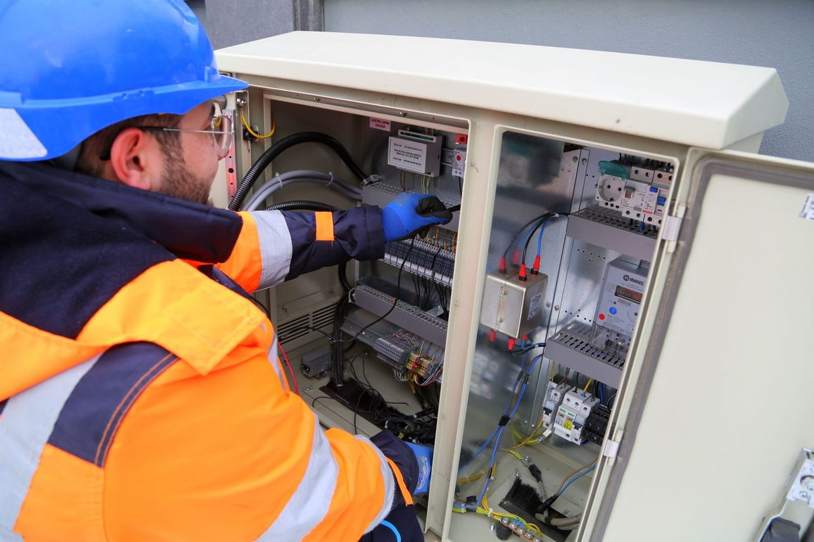

خبرة قيادتنا في دول الخليج
إدارة متكاملة للمرافق
أصولك.
مسؤوليتنا.
صيانة مدروسة. تشغيل موثوق.نعتني بمبانيك ومعدّاتك، لتتفرّغ لما يهمّ أعمالك.
مقرّنا في طرابلس، وخدماتنا في جميع أنحاء لبنان.

خدمات تتمحور حول منشأتك
عناية اليوم. اطمئنان الغد.
نهج وقائي. دعم يُعتمد عليه.
تدخّل طارئ حين تحتاج إليه، طوال أيام الأسبوع
عناية مخطّطة تحافظ على أصولك على المدى الطويل
تعرّف إلى إدارة المرافق الأولى
عناية أفضل بمبانيك.
اطمئنان أكبر لك.
من الخدمات الأساسية للمباني إلى الصيانة الوقائية، تجمع FFM احتياجات منشأتك ضمن نهج واحد متكامل.
من مقرّنا في طرابلس، نساعد الشركات في جميع أنحاء لبنان على حماية أصولها وتخطيط الصيانة والحفاظ على استمرارية أعمالها اليومية.
تعرّف إلى FFMخدماتنا
كلّ التفاصيل.
بتنسيق متكامل.
خبرة تقنية وعناية يومية.
تتكامل حول احتياجات منشأتك.

الأنظمة التقنية
العناية بأنظمة التدفئة والتهوية والتكييف والكهرباء والسباكة، للحفاظ على موثوقية الأنظمة الأساسية.

صيانة المباني
أعمال صيانة مخطّطة وإصلاحات مدنية للحفاظ على حالة عقارك.

العناية اليومية بالمرافق
تنظيف وأمن وعناية بالمساحات الخضراء، لبيئات مرتّبة ومرحّبة.
نهج متكامل للعناية بالمباني والصيانة التقنية وخدمات المرافق.

رؤية أشمل
الإدارة الجيدة للمرافق
تدعم أداء أعمالك.
لماذا تختار FFM؟
صيانة تراعي
احتياجات الغد.
يساعدك النهج الاستباقي على اتخاذ قرارات أفضل بشأن أصولك ووقتك وميزانية الصيانة.
احمِ استثمارك
تساعد الفحوص المنتظمة والعناية المخطّطة على إطالة عمر المعدّات ومعالجة التآكل مبكرًا.
حافظ على استمرارية التشغيل
تساعد الصيانة الوقائية والاستجابة الطارئة على مدار الساعة في الحدّ من الانقطاعات غير المتوقّعة.
اجعل الصيانة أكثر وضوحًا
تساعدك الخدمات المنسّقة والأولويات الواضحة على تخطيط الأعمال والحدّ من التكاليف التي يمكن تجنّبها.
نهج FFM
نفهم. نخطّط. نعتني.
خطوات واضحة، من التقييم الأولي
إلى العناية المستمرة.
نقيّم منشأتك
نفحص الموقع ونحدّد الأصول والأنظمة التي تحتاج إلى عناية.
نخطّط للصيانة الوقائية
نحدّد أولويات الصيانة وفق احتياجات المعدّات ومتطلّبات التشغيل.
ننسّق الأعمال
نجمع الخدمات المناسبة، مع دعم طارئ عند الحاجة.
نراجع ونتابع
نتابع الأعمال المنجزة ونكيّف الخطة مع تطوّر احتياجات منشأتك.
لنتحدّث عن منشأتك
اجعل الصيانة الأفضل
خطوتك التالية.
لنبدأ بالحديث عن مبناك،
وأصولك والدعم الذي تحتاج إليه.